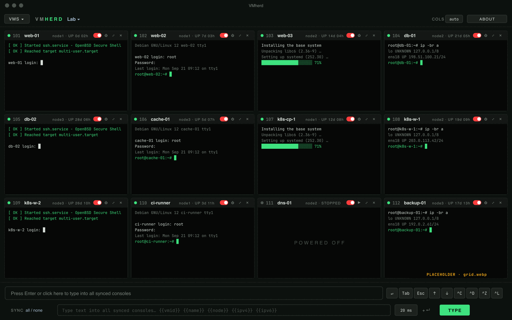
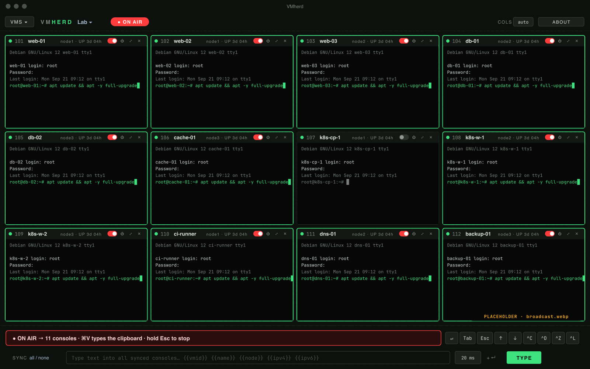
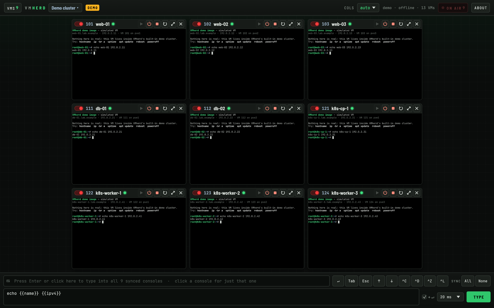
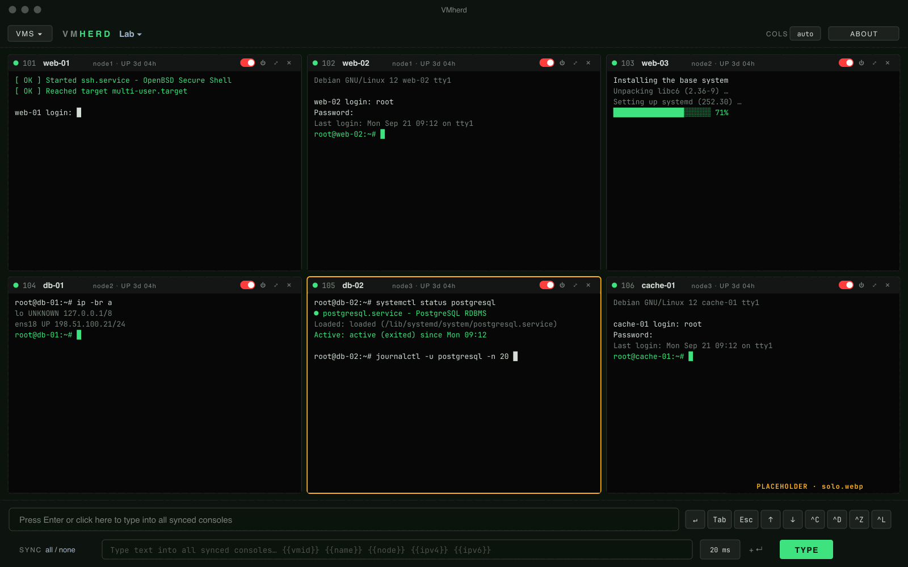
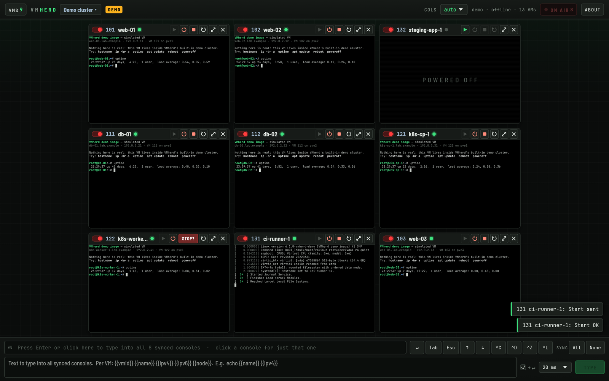
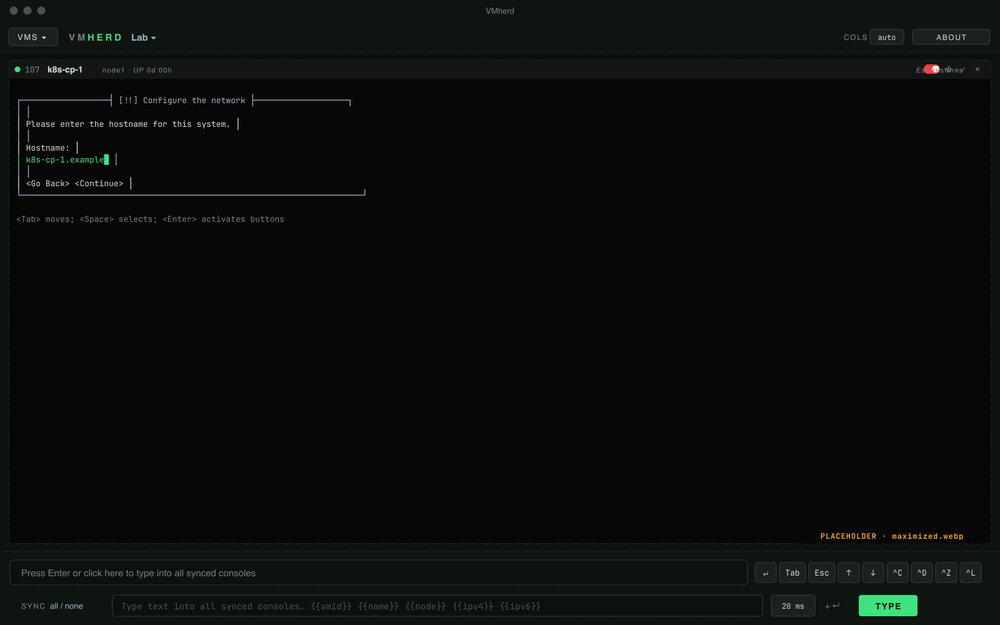
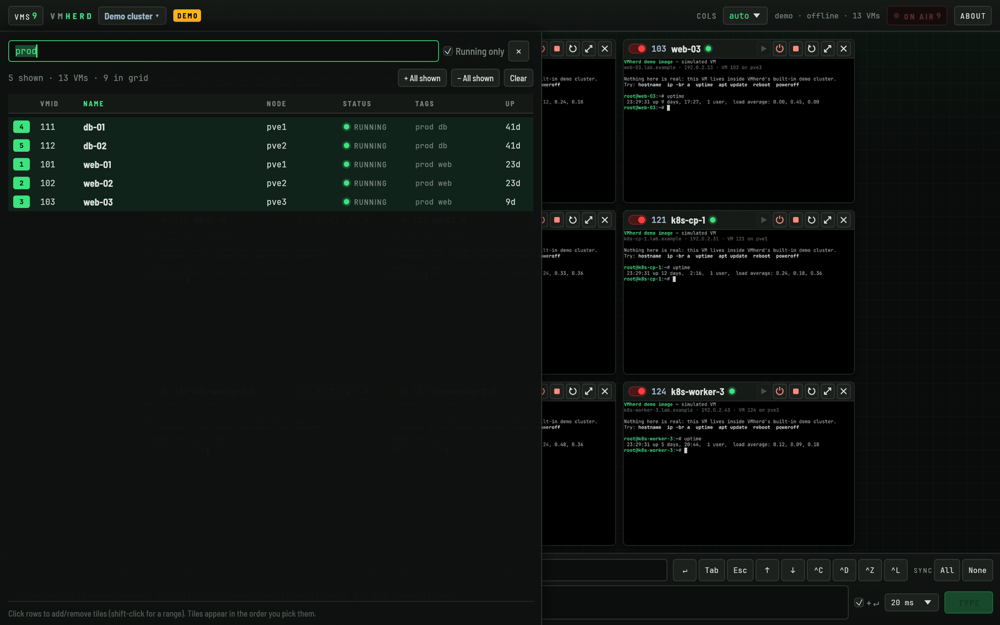
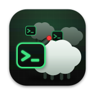

API tokens, least privilege
Log in with a Proxmox API token (user@realm!name), never a password. You decide what it may do: VM.Audit and VM.Console, plus VM.PowerMgmt for the power buttons.
For Proxmox VE // native on your Mac
All your Proxmox VE consoles in one native Mac window. Type into all of them at once, or into just one.
Made for the part before SSH works: OS installers, first logins, network setup, boot menus and recovery shells. On twelve machines at a time, without twelve browser tabs.
Built in Rust. Distributed for macOS through the Mac App Store; the same code runs on Linux and Windows (beta).
Before SSH works
01 Many at once
Pick VMs and containers from your cluster and watch all of their consoles side by side. No browser tabs, no noVNC windows to juggle.

02 Control all at once
Click the broadcast bar, or press Enter, and it goes ON AIR: every keystroke goes to all synced consoles at the same time, as real key presses.
Think csshX or tmux synchronize-panes, but on the VM console itself, so it works before there is a network, an SSH daemon or even an installed OS.

03 Per-VM values
Type text sends a command or a script to every synced console, and fills in placeholders for each VM on the way.
hostnamectl set-hostname {{name}}
echo "{{vmid}} on {{node}}: {{ipv4}} {{ipv6}}"| VM | typed |
|---|---|
| 101 | echo "101 on node1: 192.0.2.11 2001:db8::11" |
| 104 | echo "104 on node2: 198.51.100.21 2001:db8::21" |
| 107 | echo "107 on node3: 203.0.113.41 2001:db8::41" |
{{ipv4}} and {{ipv6}} come from the QEMU guest agent or the container's interfaces. A VM without an address gets nothing typed. For VMs the token also needs VM.Monitor (Proxmox VE 8) or VM.GuestAgent.Audit (Proxmox VE 9).
{{name}} becomes web-01, web-02, db-01 …04 Or just one
No Proxmox web interface, no browser tab, no hunting through the tree. The console you need is one click away, and so are its power buttons.

Click a console and it turns amber: keys and mouse go to that VM only. Hold Esc to let go.

Start, shut down (ACPI) or hard stop a VM from its tile. Shutdown and stop ask for a second click.

Blow any console up to the full window for an installer or a boot menu. Esc restores the grid.
05 Filter and list
The VM list filters on name, VMID, node, status and tags as you type. Two operators, zero learning curve.

>_ Keyboard
06 Under the hood
Least privilege, secrets in the Keychain, pinned certificates. VMherd talks to your Proxmox servers and nothing else.
Log in with a Proxmox API token (user@realm!name), never a password. You decide what it may do: VM.Audit and VM.Console, plus VM.PowerMgmt for the power buttons.
Token secrets are stored in your macOS Keychain, never in a settings file. Bookmarks and layout stay in the app's own sandbox container.
HTTPS only for remote servers. Self-signed Proxmox certificates are pinned by SHA-256 fingerprint, like SSH host keys. A changed certificate is refused until you trust it again.
No sign-up, no telemetry, no update pings. VMherd connects only to the servers you add. Keys go only to the consoles you selected, while the VMherd window is focused.
Bookmark any number of Proxmox VE clusters or single nodes and switch between them from the top bar. The grid is remembered per cluster.
Its own VNC client, written in Rust, no browser engine, no plugins. A universal app that runs natively on Apple silicon and Intel Macs.
07 Built in Rust
VMherd is written in Rust, with its own VNC client and a GPU-drawn interface (egui). The same code builds for Linux and Windows.
The supported release. A universal app for Apple silicon and Intel, signed and sandboxed, with updates through the Mac App Store. Token secrets live in your Keychain.
Build it from source. Wayland or X11. Token secrets go to a Secret Service keyring such as GNOME Keyring, or to a private file when there is none.
Build it from source. Token secrets go to the Windows Credential Manager.
Beta means built and tested on every commit, but used less day to day than the Mac app. Source and build instructions are on GitHub. Builds you make yourself fall under the source license: free for non-commercial use.
08 What you need
VM.Audit and VM.Console, plus VM.PowerMgmt for the power buttons.# a role with just what VMherd needs
pveum role add VMherd --privs "VM.Audit VM.Console VM.PowerMgmt"
pveum user add vmherd@pve
pveum acl modify /vms --users vmherd@pve --roles VMherd
# the token inherits the user's permissions
pveum user token add vmherd@pve grid --privsep 0
Leave out VM.PowerMgmt for a look-and-type-only token. Narrow /vms to a pool to limit which VMs VMherd can see.
?? FAQ
Yes. Bookmark a standalone Proxmox VE node exactly like a cluster: its API URL, a token ID and the token secret.
VM.Audit to list VMs and VM.Console to open their consoles. Add VM.PowerMgmt if you want the start, shutdown and stop buttons. Grant them on /vms, or on a pool.
No. Keys only go to the consoles you selected (synced, or the one in solo) while the VMherd window is focused and the bar shows ON AIR or SOLO. VMherd needs no Accessibility or Input Monitoring permission, and releases all keys when the window loses focus.
Yes. Click Try the demo on the cluster screen to open a built-in demo cluster with simulated VMs: live consoles, power buttons and typing, all local. No Proxmox server needed.
Both: QEMU/KVM virtual machines and LXC containers show up in the VM list and open as tiles.
Broadcast and solo keystrokes are sent as physical keys, so the guest's own layout applies, like a real keyboard. Type text sends US key codes, so for that the guest needs a US layout.
No. VMherd opens consoles in shared mode, so a noVNC console in the Proxmox web interface stays connected.
Yes, in beta. VMherd is written in Rust and the same code builds for Linux and Windows; CI builds and tests it on all three on every commit. There are no store builds for those yet: build it from the source on GitHub. On Linux, token secrets go to a Secret Service keyring; on Windows, to the Credential Manager.

All your Proxmox VE consoles in one native Mac window. €19.99, one-time purchase.